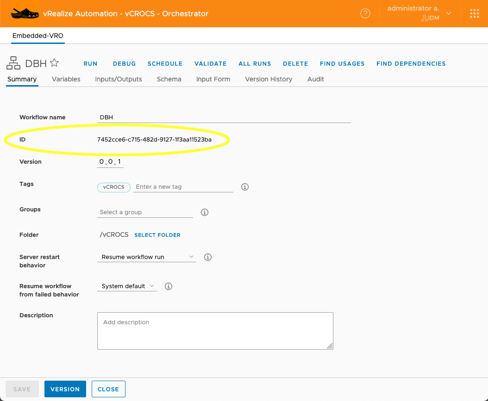
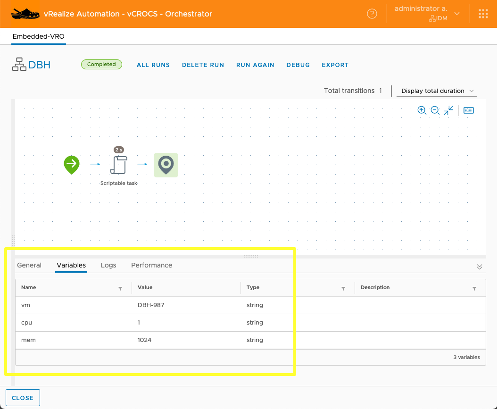
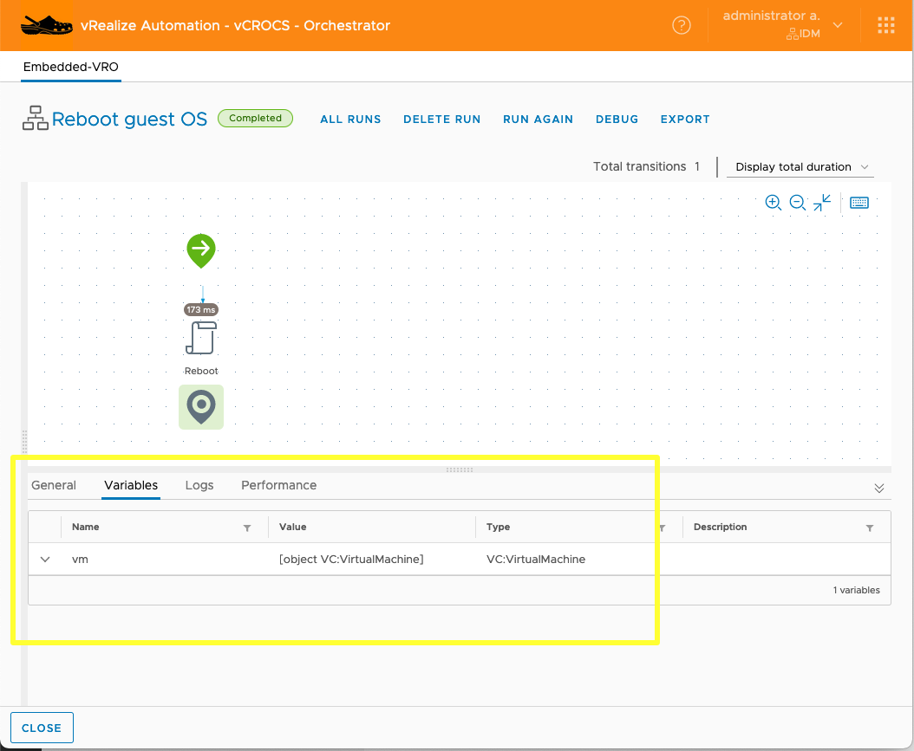
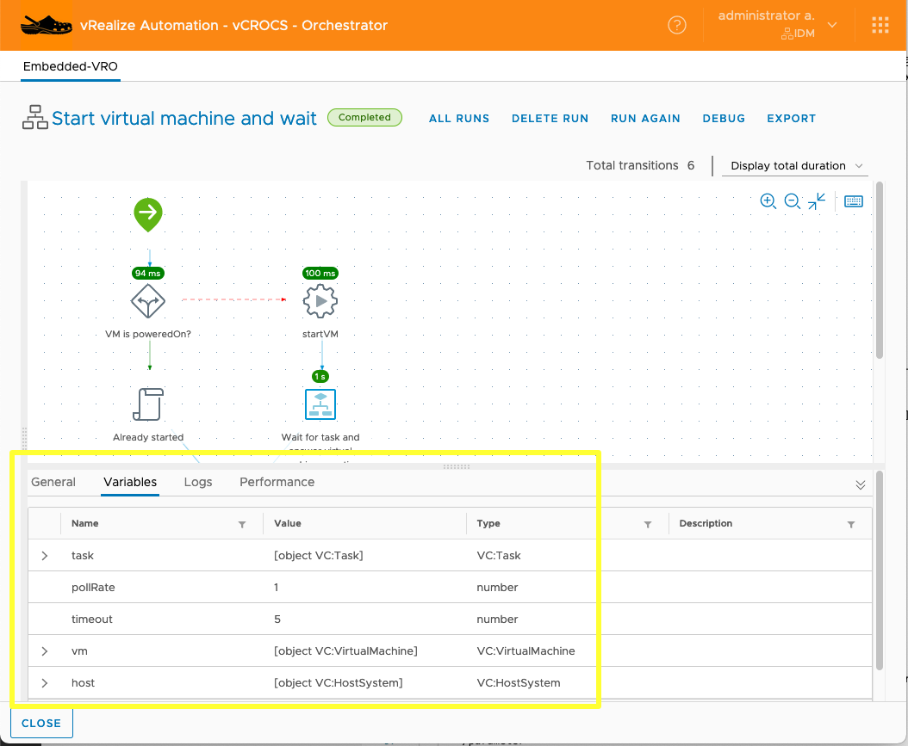
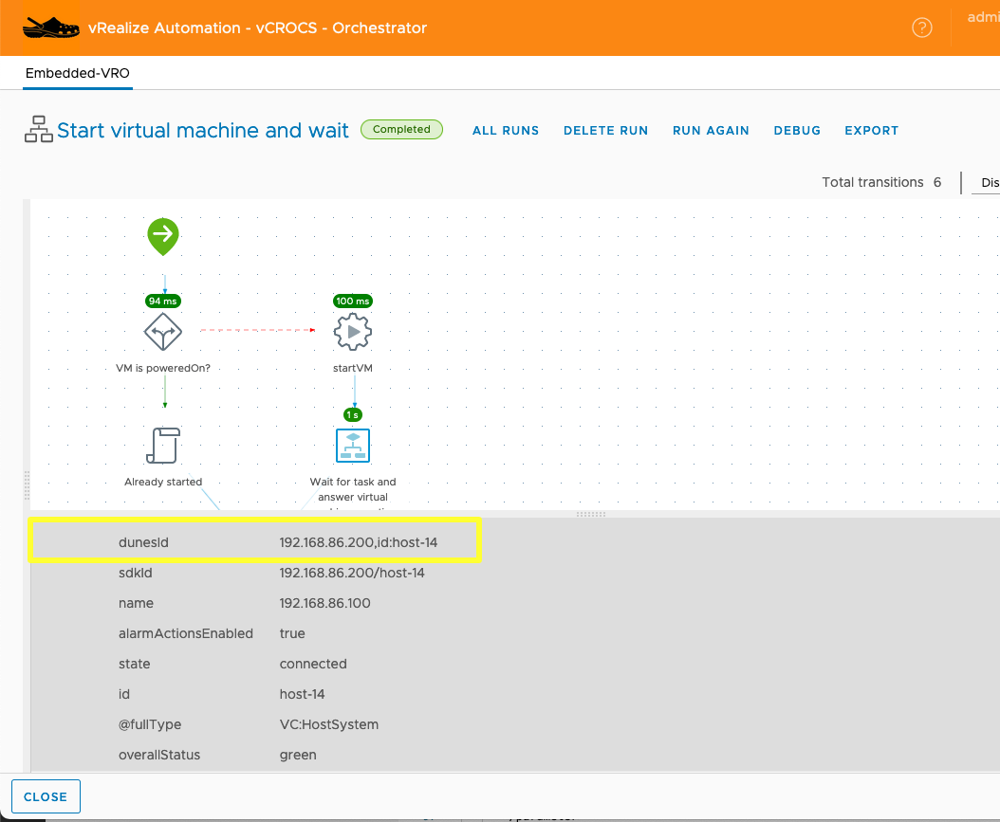

Automating Automation (Updated)

Using vRO REST API. - (Updated for vRA 8.4)
I recently had a use case where I wanted to execute a vRealize Orchestrator Workflow by using REST API. There is some documentation available but not a lot of details on how to get and use variables, sdk-objects and bearer token for permission. Here is how I made the vRO REST API calls with PowerShell using vRealize Orchestrator built-into vRA.
Steps:
1. Permission:
- Need to get a Bearer Token from vRO to make REST API Call to execute Workflow.
- To get a Bearer Token you need to make an REST API Call with username/password. See example code.
2. Workflow Information:
- Get Workflow ID.
- Get Workflow variable inputs.
- Get sdk-object names from a successful Workflow run.
- See Screen Shots and sample code.
3. Run the Workflow you want to use REST API with manually at least one time successfully. When you look at the variables of a successful Workflow run it shows you what the Workflow is expecting for variables and sdk-objects. See Screen Shots.
Code to get bearer Token (PowerShell):
You can't use vRO REST API without getting bearer token first.
(Note: When vRealize Automation 8.4 was released there was a small change to api to get Bearer Token. See the changes in the code area. Everything else has stayed the same for my processes.)
# Get Bearer Token from vRA REST API Call
# Some of the commented lines are in the code for testing. I use to check variable
# values when building the Automation.
# I am showing password in this example. In Production I get the Password from a Hashi
# Secret Server and DO NOT have the password Hard Coded.
# --- [ Variables ] ---
$password = 'VMware1'
# --- [ Headers ] ---
$headers = New-Object "System.Collections.Generic.Dictionary[[String],[String]]"
$headers.Add("Content-Type", "application/json")
$headers.Add("Accept", "application/json")
# --- [ Body ] ---
$body = "{
`n `"password`": `"passwordString`",
`n `"username`": `"administrator`"
`n}"
$body = $body -Replace("passwordString",$password)
#$body
# --- [ Invoke REST API ] ---
# vRA 8.3 Use next line
$response = Invoke-RestMethod -SkipCertificateCheck 'https://vRA-FQDN.domain.name/csp/gateway/am/api/login?access_token' -Method 'POST' -Headers $headers -Body $body
# vRA 8.4 Use next line
$response = Invoke-RestMethod -SkipCertificateCheck 'https://vRA-FQDN.domain.name/csp/gateway/am/api/login?cspAuthToken' -Method 'POST' -Headers $headers -Body $body
$response | ConvertTo-Json
#$response
# vRA 8.3 Use next line
#$response.access_token
# vRA 8.4 Use next line
#$response.cspAuthToken
# vRA 8.3 Use next line
$bearer_token = "Bearer " + $response.access_token
# vRA 8.4 Use next line
$bearer_token = "Bearer " + $response.cspAuthToken
# $bearer_tokenCode to get execute a vRO Workflow using API Call (PowerShell):
# Run vRA Workflow using API Call
# --- [ Variables ] ---
$vmName = 'DBH-1234'
$emailAddress = Dale.Hassinger@vCROCS.info'
$OSVersion = 'Ubuntu18044'
$PSText = 'G:\Scripts\Create-Linux-Server-Step-1-v01-PROD.ps1 -vmNAME $vmName -emailAddress $emailAddress -OSVersion $OSVersion'
# --- [ Headers ] ---
$headers = New-Object "System.Collections.Generic.Dictionary[[String],[String]]"
$headers.Add("Content-Type", "application/xml")
$headers.Add("Authorization", $bearer_token)
# --- [ Body ] ---
$body = '
<execution-context xmlns="http://www.vmware.com/vco">
<parameters>
<parameter name="vm" type="VC:VirtualMachine" scope="local">
<sdk-object type="VC:VirtualMachine" id="vCenter.FQDN,id:vm-12345"/>
</parameter>
<parameter name="vmUsername" type="string" scope="local">
<string>username@domain.name</string>
</parameter>
<parameter name="vmPassword" type="SecureString" scope="local">
<string>vmPassword_string</string>
</parameter>
<parameter name="programPath" type="string" scope="local">
<string>C:\Windows\System32\WindowsPowerShell\v1.0\powershell.exe</string>
</parameter>
<parameter name="arguments" type="string" scope="local">
<string>arguments_string</string>
</parameter>
<parameter name="workingDirectory" type="string" scope="local">
<string>G:\Scripts</string>
</parameter>
</parameters>
</execution-context>
'
# $body
# I define the Body format and then replace strings of text that I define with variables
# in the code.
$body = $body -Replace("vmPassword_string",$password)
$body = $body -Replace("arguments_string",$PSText)
# --- [ Invoke REST API ] ---
$response = Invoke-RestMethod -SkipCertificateCheck 'https://vRA-FQDN.domain.name/vco/api/workflows/9cc3ac9d-062b-4e98-aa9d-e781e47f1234/executions' -Method 'POST' -Headers $headers -Body $body
$response | ConvertTo-Json
#$responseOrchestrator Workflow:
This is where you get the Workflow ID value. See highlighted area.:

Sample Code to use Workflow ID:
$response = Invoke-RestMethod -SkipCertificateCheck 'https://vRA-FQDN.domain.name/vco/api/workflows/7452cce6-c715-482d-9127-1f3aa11523ba/executions' -Method 'POST' -Headers $headers -Body $bodyThis is where you get the input variable values. See highlighted area.:

This is where you get the sdk-object variable values. See highlighted area.:

This is where you get the sdk-object/input variable values. See highlighted area.:


Sample Code to specify "VC:HostSystem" and ID value:
<parameter name="vm" type="VC:HostSystem" scope="local">
<sdk-object type="VC:VirtualMachine" id="192.168.86.200,id:host-14"/>
</parameter>Click Here to see Larger Image of Screen Shot
Sample Code to specify "VC:VirtualMachine" and ID value (VM.ExtensionData.MoRef.Value):
<parameter name="vm" type="VC:VirtualMachine" scope="local">
<sdk-object type="VC:VirtualMachine" id="192.168.86.200,id:vm-3006"/>
</parameter>
# Example of how to build the body.
$vCenter = '192.168.86.200'
$vmInfo = Get-VM -Name 'administrator-904'
$vmMoref = $vmInfo.ExtensionData.MoRef.Value
# --- [ Body ] ---
$body = '
<execution-context xmlns="http://www.vmware.com/vco">
<parameters>
<parameter name="vm" type="VC:VirtualMachine" scope="local">
<sdk-object type="VC:VirtualMachine" id="vCenterString,id:vmString"/>
</parameter>
</parameters>
</execution-context>
'
$body
# I define the Body format and then replace strings of text that I define with variables
# in the code.
$body = $body -Replace("vmstring",$vmMoref)
$body = $body -Replace("vCenterstring",$vCenter)
$bodyI hope this helps you understand how to automate running vRO Workflows using REST API with PowerShell.
Happy Automating...